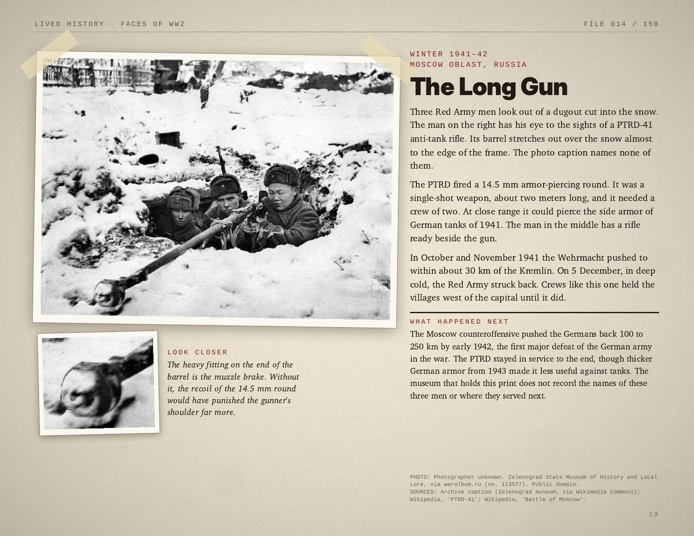
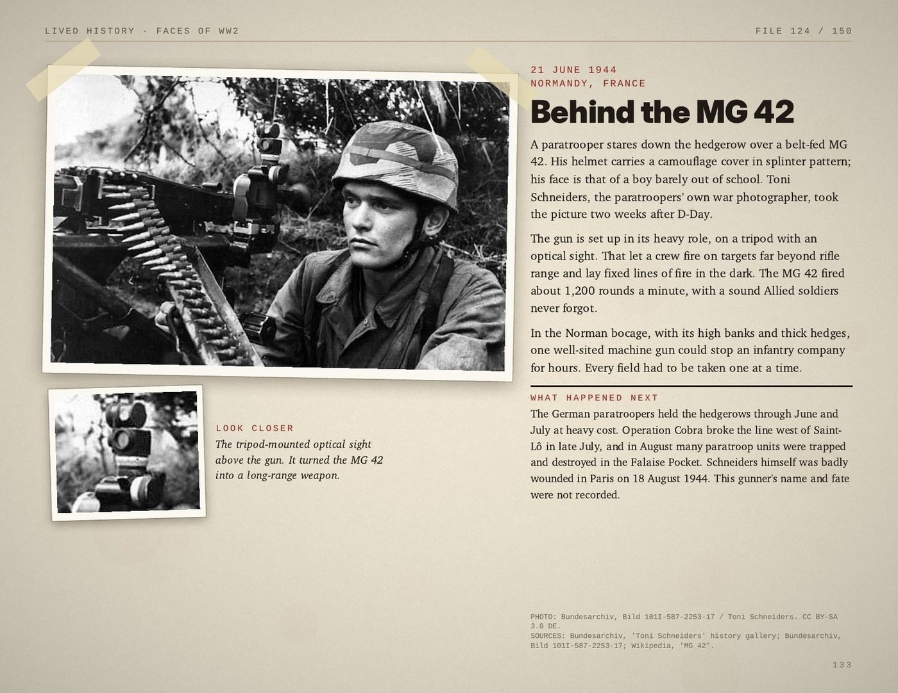
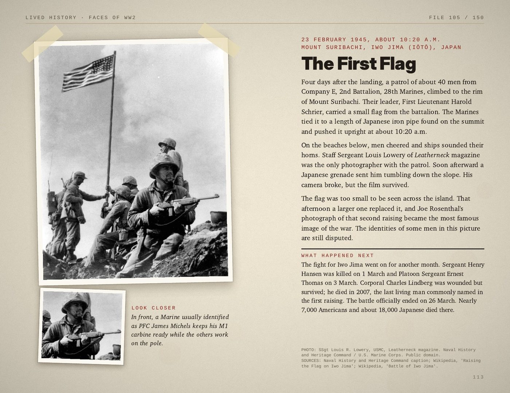
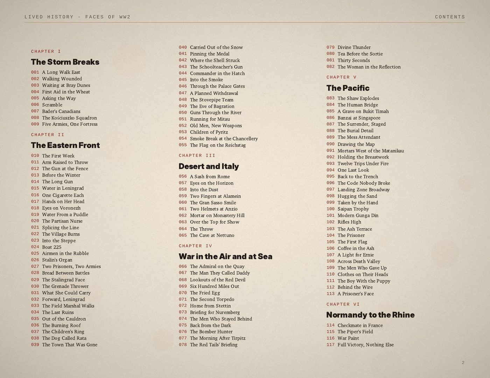
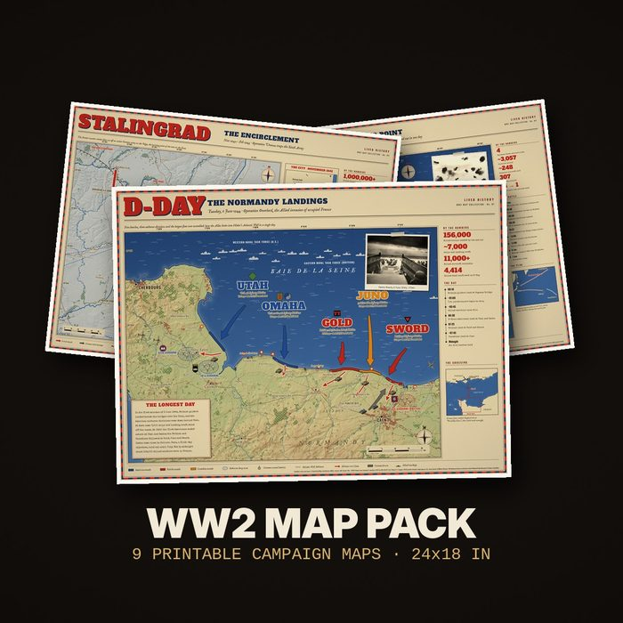
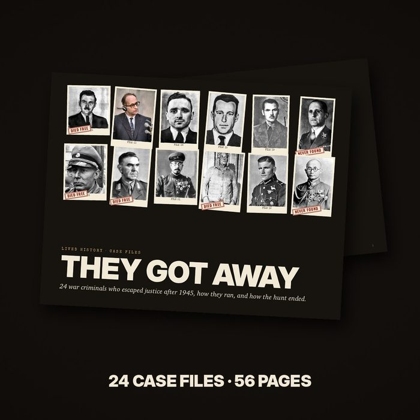

A landing craft opening onto Omaha Beach. A red flag over the Reichstag. A Marine raising the first flag on Iwo Jima. You know the pictures. Few people were ever told who was in them, what happened five minutes later, or whether they made it home.
This book puts the men back into the pictures, from every side of the war: American, British, Soviet, German and Japanese.
What every file gives you
- The photograph, as large as the page allows, cleaned and sharpened from the archive scan. No faces redrawn, no fake color.
- The story: who, where, and what was happening in that second.
- Look closer: one detail in the photo most people never notice, shown in a close-up.
- What happened next: where the men, the unit or the ship ended up.
- The sources: every file names the archive and the sources checked.

A real page from the book: Soviet anti-tank gunners outside Moscow, winter 1941.

Another page: a German machine-gunner in the Normandy hedgerows, June 1944.

And the first flag on Mount Suribachi, Iwo Jima, before the famous one.
Inside the book
- I. The Storm Breaks, 1939–1941
- II. The Eastern Front: 46 files from the biggest war in history
- III. Desert and Italy
- IV. War in the Air and at Sea
- V. The Pacific: 31 files, from Pearl Harbor to Okinawa
- VI. Normandy to the Rhine
- VII. The End: surrenders, the Nuremberg courtroom, the road home

Where the photos come from
The U.S. National Archives, the Imperial War Museum, the German Federal Archives, the RIA Novosti archive, the U.S. Marine Corps and other public archives. Credits and licences are printed on every page.
Add these at checkout, if you like

WW2 Map Pack · $9.90
Nine vintage-style campaign maps: D-Day, Pearl Harbor, Stalingrad, Midway, the Bulge, Iwo Jima, Berlin, Kursk and Market Garden. Print-ready at 24×18 inches, and sharp at letter size too.

They Got Away · $9.90
24 case files on the war criminals who escaped justice after 1945: Mengele, Eichmann, Barbie, Stangl and 20 more. How they ran, the hunters who chased them, and how each case ended.
Guarantee
If the book isn't what you expected, ask for your money back within 7 days and you get a full refund.